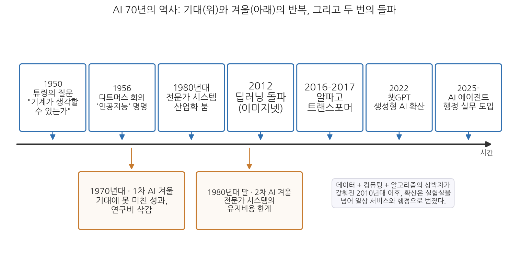
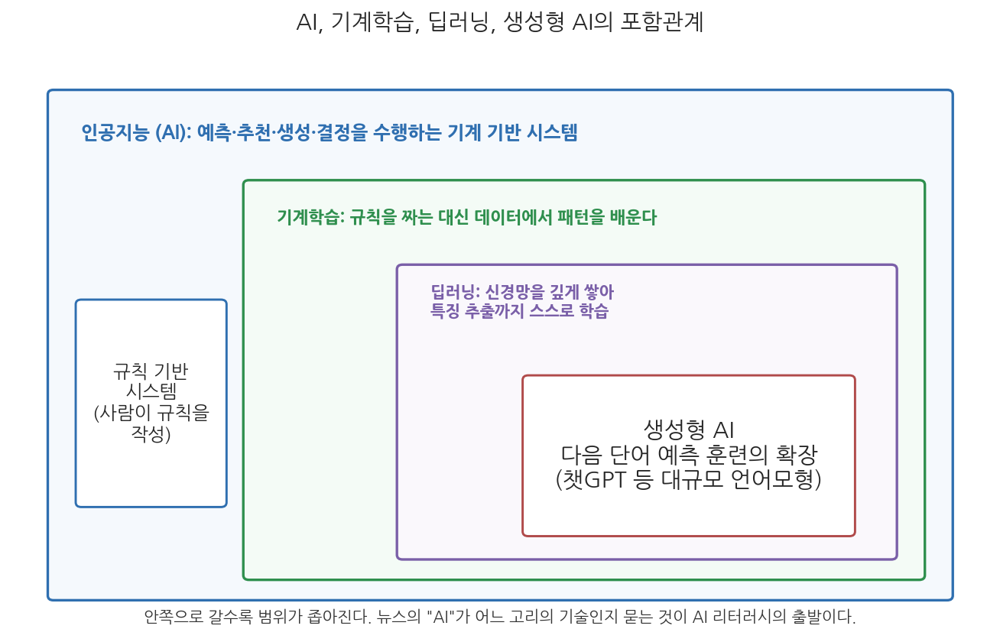

1주차 2차시. AI의 개념과 공공부문의 활용
나는 "기계가 생각할 수 있는가"라는 질문을 검토해 보자고 제안한다. (앨런 튜링, 「계산 기계와 지능」, 1950)
이 장에서 배우는 것
2016년 3월, 서울의 한 호텔에서 세계 최정상의 바둑 기사 이세돌 9단이 구글 딥마인드의 바둑 AI 알파고(AlphaGo)와 다섯 판을 두었다. 대국 전 전문가 다수는 인간의 낙승을 점쳤다. 바둑은 경우의 수가 우주의 원자 수보다 많아 기계가 정복하려면 십 년은 더 걸린다는 것이 통설이었다. 결과는 알파고의 4승 1패였다. 이 대국은 한국 사회가 AI라는 존재를 실감한 사건이었고, 이듬해부터 정부 문서에 "지능정보사회"라는 말이 쏟아져 나오는 계기가 되었다.
그로부터 10년이 지난 지금, AI는 바둑판을 넘어 훨씬 일상적인 곳에 들어와 있다. 2022년 말 공개된 챗GPT(ChatGPT)는 두 달 만에 월간 이용자 1억 명에 이른 것으로 추정되며 생성형 AI의 시대를 열었고, 2025년 11월부터는 한국 공무원들이 행정 내부망에서 생성형 AI 챗서비스로 보고서 초안을 잡는 시대가 시작되었다. 1차시에서 우리는 행정이 왜 AI를 만나게 되었는지를 보았다. 이번 차시의 질문은 그 만남의 상대에 관한 것이다. 도대체 AI란 무엇인가. 어떤 역사를 거쳐 지금에 이르렀고, 어떤 원리로 작동하며, 지금 국내외 정부는 이것을 어디에 얼마나 쓰고 있는가. 그리고 마지막으로, 같은 기술이라도 공공부문에서 쓰일 때는 민간에서와 무엇이 달라지는가. 구체적으로 다음을 배운다.
- AI의 정의(OECD, AI기본법)와 70여 년의 역사: 기대와 겨울의 반복, 딥러닝과 생성형 AI의 돌파
- 기계학습과 딥러닝의 기본 원리를 수식 없이 비유로 이해하기
- 국내외 공공부문 AI 활용의 지형: 기술 유형과 도입 현황 (2026년 기준)
- 민간과 다른 공공부문의 조건: 적법절차, 형평, 책임
이 장은 행정이 만난 상대의 정체를 네 단계로 파악한다.
2.1 AI란 무엇인가를 정의와 역사로 본다 → 2.2 그 핵심 엔진인 기계학습·딥러닝의 원리를 비유로 이해한다 → 2.3 공공부문 AI 활용의 지형을 기술 유형과 국내외 현황으로 그린다 → 2.4 공공부문의 AI가 민간의 AI와 다른 이유를 두 개의 실패 사례로 확인한다.
2.1 AI란 무엇인가: 정의와 역사
하나로 합의된 정의는 없다
AI의 정의는 학문과 분야마다 다르고, 지금도 하나로 합의되어 있지 않다. 행정학 안에서도 초기에는 AI를 여러 최적화 기법 중 하나로 보는 입장이 있었으나 지금은 크게 받아들여지지 않는다. 기법의 하나로 치부하기에는 기술의 범위와 파급이 너무 커졌기 때문이다. 현재 국제적으로 가장 널리 쓰이는 것은 경제협력개발기구(OECD)의 정의다. 이 정의가 몇 년 사이에 어떻게 바뀌었는지가 흥미로운 대목이다.
OECD의 정의(2019): 인간이 정의한 목표에 대해 예측, 추천, 또는 실제·가상환경에 영향을 미치는 결정을 내릴 수 있는 기계 기반 시스템.
OECD의 개정 정의(2024): 명시적 또는 암묵적 목표를 위해, 입력받은 정보로부터 예측, 콘텐츠 생성, 추천, 또는 실제·가상환경에 영향을 미칠 수 있는 결정을 만들어 내는 기계 기반 시스템.
한국 AI기본법의 정의(2026년 1월 시행): 학습, 추론, 지각, 판단, 언어의 이해 등 인간이 가진 지적 능력을 전자적 방법으로 구현하기 위한 기술(법 제2조).
OECD가 2024년에 정의를 고치면서 추가한 핵심 단어는 "콘텐츠 생성"이다. 2019년의 정의는 AI를 예측하고 추천하고 결정하는 기계, 곧 판별하는 기계로 그렸다. 그런데 2022년 이후 글과 그림과 소리를 만들어 내는 생성형(generative) AI가 폭발적으로 확산되자, 국제 표준의 정의가 기술을 뒤따라가며 바뀐 것이다. 정의가 개정되었다는 사실 자체가 이 분야의 성격을 잘 보여 준다. AI는 완성된 기술의 이름이 아니라 움직이는 표적이다.
정의에서 기억할 것은 두 가지다. 첫째, AI는 "인간 수준의 지능을 가진 기계"가 아니라 특정한 과업에서 예측, 추천, 생성, 결정을 수행하는 기계 기반 시스템이다. 공상과학의 로봇을 떠올릴 필요도 없고, 그래서도 안 된다. 둘째, 예측·추천·결정이라는 단어에 주목해야 한다. 이것은 정확히 행정이 매일 하는 일이다. 누구를 지원 대상으로 볼지 예측하고, 어떤 서비스를 추천하고, 신청을 인용할지 결정한다. AI의 정의가 곧 행정의 업무 목록과 겹친다는 사실, 이것이 두 세계가 만날 수밖에 없었던 깊은 이유다.
70년의 역사: 기대와 겨울의 반복
AI는 최근의 발명품이 아니다. 출발점은 보통 1950년, 영국 수학자 앨런 튜링(Alan Turing)이 「계산 기계와 지능」이라는 논문에서 "기계가 생각할 수 있는가"라는 질문을 던지고, 그 판별법으로 모방 게임(지금의 튜링 테스트)을 제안한 순간으로 잡는다. "인공지능(artificial intelligence)"이라는 이름은 1956년 미국 다트머스대학에서 존 매카시(John McCarthy) 등 젊은 연구자들이 연 여름 워크숍에서 붙여졌다. 학습을 비롯한 지능의 모든 측면을 기계로 정밀하게 흉내 낼 수 있으리라는 대담한 선언과 함께였다.
그러나 역사는 직선으로 오르지 않았다. 초기의 낙관은 번번이 현실의 벽에 부딪혔고, 성과가 기대에 못 미치자 연구비가 끊기는 침체기가 두 차례 찾아왔다. 1970년대와 1980년대 말의 이른바 "AI 겨울(AI winter)"이다. 1980년대에는 전문가의 지식을 규칙으로 옮겨 담은 전문가 시스템(expert system)이 산업적으로 반짝했으나 유지비용의 벽에 막혔다. 흐름이 바뀐 것은 1990-2000년대에 규칙 대신 데이터로부터 배우는 기계학습(machine learning)이 주류가 되면서였고, 결정적 돌파는 2012년에 왔다. 그해 세계 이미지 인식 대회(ImageNet)에서 심층 신경망(딥러닝) 기반 모형이 종전 방식들을 압도적 격차로 누른 것이다. 이후의 이정표는 우리에게 익숙하다. 2016년 알파고, 2017년 오늘날 생성형 AI의 기반이 된 트랜스포머(transformer) 구조의 등장, 2022년 챗GPT, 그리고 2020년대 중반 이후 사람의 지시를 받아 여러 단계의 작업을 스스로 수행하는 AI 에이전트(AI agent)의 확산이다.

그림 1-3을 읽는 법은 이렇다. 가로축은 시간이고, 위쪽 상자들은 기대가 부풀었던 국면, 아래쪽 상자들은 침체의 국면이다. 이 그림에서 알 수 있는 것은 두 가지다. 첫째, AI의 역사는 과열과 냉각의 사이클을 반복해 왔다는 점이다. 지금의 열기 역시 역사상 처음이 아니며, 이 사실은 현재의 약속들을 냉정하게 평가할 근거가 된다. 둘째, 그럼에도 2012년 이후의 국면은 이전과 질적으로 다르다는 점이다. 과거의 돌파가 실험실과 대회에 머물렀다면, 이번에는 검색, 번역, 민원 챗봇, 문서 작성처럼 수억 명이 매일 쓰는 서비스로 확산되었다.
두 차례의 AI 겨울은 공통의 구조를 가진다. 연구자와 언론이 기대를 부풀리고, 정부와 기업이 투자하고, 성과가 기대에 못 미치자 실망과 함께 자금이 마르는 구조다. 2010년대의 돌파가 과거와 달랐던 것은 세 가지 조건이 처음으로 동시에 갖춰졌기 때문이다. 데이터(인터넷과 스마트폰이 쏟아 낸 학습 재료), 컴퓨팅(그래픽처리장치 GPU가 제공한 값싼 대규모 연산), 알고리즘(심층 신경망 학습 기법의 개량)이다. 셋 중 하나라도 빠졌던 과거의 시도는 번번이 좌초했다. 이 삼박자 구도는 공공부문에도 시사점이 있다. 정부의 AI 사업이 성과를 내려면 알고리즘 도입만이 아니라 데이터의 품질과 기반(컴퓨팅, 인력)이 함께 갖춰져야 한다는 것이다.
2.2 기계학습·딥러닝의 기본 원리
규칙을 짜는 대신 데이터에서 배운다
전통적인 소프트웨어는 사람이 규칙을 짜서 만든다. "연소득이 얼마 이하이고 재산이 얼마 이하이면 수급 자격이 있다"처럼, 조건과 처리를 사람이 일일이 코드로 적는 방식이다. 규칙이 명확한 업무에는 이 방식이 잘 맞고, 사실 전자정부 시스템의 대부분은 지금도 이렇게 만들어져 있다. 문제는 규칙으로 적기 어려운 일들이다. 사진 속에 고양이가 있는지 판별하는 규칙을 적어 보라. "귀가 뾰족하고 수염이 있다"는 규칙은 셀 수 없는 예외 앞에서 무너진다.
기계학습은 접근을 뒤집는다. 규칙을 적는 대신, 정답이 붙은 예시를 대량으로 주고 기계가 스스로 패턴을 찾게 한다. 스팸 메일 필터가 좋은 예다. "'대출'이라는 단어가 있으면 스팸"이라는 규칙은 발신자가 '대*출'로 표기만 바꿔도 뚫린다. 대신 스팸으로 신고된 수백만 통과 정상 메일 수백만 통을 주고 학습시키면, 기계는 사람이 명시적으로 적지 못하는 미묘한 패턴들의 조합을 찾아낸다. 요컨대 기계학습이란 문제집(데이터)과 정답지(레이블)로 공부시켜 시험(새로운 사례)을 치르게 하는 것이다. 학습의 방식은 크게 셋으로 나뉜다. 정답지를 주고 배우게 하는 지도학습(supervised learning), 정답 없이 데이터 속의 무리와 구조를 찾게 하는 비지도학습(unsupervised learning), 정답 대신 행동의 결과에 상과 벌을 주어 시행착오로 배우게 하는 강화학습(reinforcement learning)이다. 알파고가 스스로와 수없이 대국하며 실력을 끌어올린 방식이 강화학습이다.
딥러닝: 층층이 쌓아 스스로 특징을 찾는다
기계학습 중에서도 사람의 뇌 신경망을 느슨하게 흉내 낸 인공신경망(artificial neural network)을 여러 층으로 깊게 쌓은 방식을 딥러닝(deep learning)이라 한다. 층을 깊게 쌓는 것이 왜 중요한가. 얼굴 인식을 예로 들면, 첫 층은 밝고 어두움의 경계 같은 단순한 특징을, 중간 층은 그 조합인 눈과 코의 모양을, 깊은 층은 그 조합인 얼굴 전체의 특징을 잡아내는 식으로, 단순한 특징에서 복잡한 개념까지를 기계가 층층이 스스로 구성한다. 과거의 기계학습에서는 "무엇을 보고 판단할지"(특징)를 사람이 설계해 주어야 했지만, 딥러닝은 특징 추출 자체를 학습한다. 2012년의 돌파가 바로 이것이었고, 이미지·음성·언어처럼 특징을 사람이 정의하기 어려운 영역에서 성능이 비약한 이유다.
생성형 AI는 이 연장선에 있다. 챗GPT 같은 대규모 언어모형(large language model, LLM)의 훈련 원리는 놀랄 만큼 단순하게 요약된다. 방대한 텍스트를 주고 "다음에 올 단어"를 맞히게 하는 연습을 천문학적 규모로 반복시키는 것이다. 그 단순한 과업을 잘하게 된 기계가 요약, 번역, 작문, 코딩까지 해내는 것은, 다음 단어를 잘 맞히려면 문법과 지식과 추론의 상당 부분을 흡수해야 하기 때문이다.

그림 1-4를 읽는 법은 이렇다. 바깥 상자에서 안쪽 상자로 갈수록 범위가 좁아지는 포함관계다. AI라는 가장 큰 범주 안에 데이터에서 배우는 기계학습이 있고, 그 안에 신경망을 깊게 쌓은 딥러닝이, 다시 그 안에 콘텐츠를 만들어 내는 생성형 AI가 있다. 이 그림에서 알 수 있는 것은 두 가지다. 첫째, 규칙 기반 시스템처럼 학습하지 않는 AI도 있으며(바깥 고리), 공공부문의 오래된 자동화 시스템 다수가 여기에 속한다. 둘째, 뉴스에서 "AI"라 불리는 것들의 실체는 이 고리들 중 어디인지에 따라 성격이 크게 다르다. 어느 고리의 기술인지 묻는 것이 AI 리터러시의 출발이다.
기계학습의 산출은 본질적으로 확률적 추정이다. "이 가구는 위기일 확률이 높다", "다음 단어는 이것일 가능성이 크다"는 것이지, 참임이 보증된 답이 아니다. 따라서 오류는 예외가 아니라 설계에 내재된 속성이며, 생성형 AI가 그럴듯한 거짓을 지어내는 환각(hallucination) 현상도 "다음 단어 맞히기"라는 원리에서 나오는 구조적 현상이다. 이 속성은 행정과 만날 때 특별한 긴장을 만든다. 행정의 처분은 시민의 권리와 의무를 확정하는 행위이고, 확률적 추정 위에 확정적 처분을 세울 때 무엇이 필요한지(사람의 확인, 이의 절차, 책임의 소재)가 이 과목 전체의 핵심 쟁점 중 하나다.
2.3 공공부문 AI 활용의 지형
무엇에 쓰는가: 네 가지 기술 축과 생성형 AI
공공부문에서 AI는 정부가 정보를 분석하고, 시민과 소통하고, 의사결정을 지원하기 위해 사용하는 자동화·지능형 시스템 전반을 포괄한다. 의료와 복지, 교통, 법 집행, 교육까지 정부 활동의 거의 전 부문에 적용되고 있거나 적용이 예정되어 있다. 활용을 기술 축으로 나누면 네 가지가 기본이고, 여기에 최근의 생성형 AI가 다섯 번째 축으로 얹힌다.
자연어 처리(natural language processing, NLP)는 사람의 언어를 다루는 기술로, 시민과 정부의 접점을 바꿔 왔다. 대표가 민원 챗봇과 알림 서비스다. 서류 안내, 세무 문의 같은 반복 질문에 실시간으로 답해 업무 부담을 줄이고 표준적이고 시의성 있는 응답을 보장한다. 한국의 국민비서 "구삐"는 2021년 3월 개통 이래 건강검진, 교통 과태료, 세금 납부 기한 같은 행정 정보를 카카오톡 등 시민이 쓰는 앱으로 먼저 알려 주는 서비스로 자리 잡았다. 기계학습 기반 예측은 공중보건, 법 집행, 사회서비스에서 위험을 예측하고 자원을 배분하는 데 쓰인다. 1차시에서 본 복지 사각지대 발굴이 전형이고, 범죄 위험 분석으로 순찰 자원을 배치하는 것도 이 유형이다. 컴퓨터 비전(computer vision)은 이미지와 영상을 읽는 기술로, 지능형 CCTV 관제, 교통 흐름 관리, 시설물 안전 점검처럼 스마트시티와 공공 안전 맥락에서 쓰인다. 로봇 프로세스 자동화(robotic process automation, RPA)는 데이터 입력, 서류 취합 같은 정형 반복 업무를 소프트웨어가 대신 수행하는 기술로, 행정의 백오피스에서 조용히 확산되어 왔다. 그리고 생성형 AI가 2023년 이후 문서 초안 작성, 회의록 요약, 보도자료 작성, 법령·판례 검색 보조처럼 공무원의 지식노동 한복판으로 들어오고 있다.
얼마나 쓰는가: 미국과 한국의 현황 (2026년 기준)
규모를 숫자로 확인해 보자. 먼저 미국 연방정부다.
미국 연방정부는 행정명령과 법률에 따라 각 연방기관이 자신의 AI 활용 사례(use case) 목록을 해마다 조사해 공개한다. 2023년 12월 미국 회계감사원(GAO) 조사에서는 23개 주요 연방기관 중 20개가 약 1,200건의 활용 사례(계획 포함)를 보고했는데, 2024년 연방 목록에서는 37개 기관 1,757건으로, 2025년 목록에서는 56개 기관 3,611건으로 늘었다. 1년 만에 두 배 이상으로 뛴 것이다. 2025년 목록 기준으로 실제 배치되었거나 시범 운영 중인 사례가 1,818건이며, 보건복지부(HHS)가 447건으로 가장 많다(미국 관리예산처 2025년 연방 AI 활용 목록, 2026년 4월 공개).
이 사례가 보여 주는 것은 두 겹이다. 표면의 사실은 연방정부 AI 활용의 폭발적 증가다. 단순 서류 자동화부터 위성 이미지 분석까지, 정부의 AI는 이미 특정 부처의 실험이 아니라 정부 전반의 일상이 되었다. 그러나 더 눈여겨볼 것은 제도의 층위다. 미국은 정부가 AI를 어디에 쓰는지를 목록으로 만들어 국민에게 공개하도록 의무화했다. 우리가 이 숫자를 알 수 있다는 사실 자체가 투명성 제도의 산물이며, 이런 공개 제도는 3주차(투명성)와 9주차(영향평가)에서 다시 만난다.
한국의 현황은 조달 계약 데이터로 볼 수 있다. 소프트웨어정책연구소(SPRi)의 「공공부문 AI 도입현황 연구」에 따르면, 공공부문의 AI 조달 계약은 2015년 221건(약 244억 원)에서 2024년 1,215건(약 2조 8,207억 원)으로 늘어, 10년 사이 건수로 5.5배, 금액으로 11.5배가 되었다. 2015-2024년 누적 계약은 6,975건이고, 조사 대상 412개 공공기관 중 268개(65%)가 AI를 도입했다(SPRi 2026년 5월 발표). 강의 원자료였던 2022년 조사 시점의 수치(연간 922건, 도입 기관 비율 56.7%)와 비교하면, 불과 2년 사이에 도입의 저변과 규모가 모두 한 단계 커진 것이다. 용도별로는 일반 국민을 향한 공공서비스보다 내부 업무 역량을 높이는 용도가 두 배가량 많다는 것이 2022년 조사의 발견이었는데, 이 구도는 생성형 AI 시대에 더 뚜렷해지고 있다. 다음 사례가 그 이정표다.
보안 규정상 한국 공무원은 오랫동안 행정 내부망에서 민간 생성형 AI 서비스를 쓸 수 없었다. 행정안전부와 과학기술정보통신부는 2025년 11월 24일부터 중앙부처와 지방자치단체 공무원이 행정망 안에서 민간 기업의 AI 챗서비스를 안전하게 쓸 수 있게 하는 "범정부 AI 공통기반" 서비스를 개시했다. 문서 초안 작성, 요약, 번역 같은 업무를 정부 전용 보안 환경에서 처리하도록 한 것으로, 2026년에는 정부가 육성하는 독자 AI 파운데이션 모델 사업에서 선정된 국산 모델도 연동해 민간 모델과 함께 쓰는 구조를 갖춘다는 계획이다. 이에 앞서 디지털플랫폼정부위원회와 행정안전부는 「공공부문 초거대 AI 도입·활용 가이드라인 2.0」(2025년 4월)을 배포해 도입 절차와 유의사항을 안내한 바 있다.
이 사례가 보여 주는 것은 공공부문 AI의 무게중심 이동이다. 첫 물결이 특정 업무 시스템(챗봇, 예측 모형)의 구축이었다면, 지금의 물결은 모든 공무원의 책상 위에 범용 도구로서의 AI가 놓이는 것이다. 도구가 범용이 될수록 영향도 전면적이 된다. 문서 작성이 빨라지는 효율의 이야기와 함께, 기계가 쓴 보고서의 오류를 누가 책임지는가, 행정 문서 작성 능력이라는 공직 역량은 어떻게 되는가 같은 질문이 함께 따라온다(12주차에서 본격적으로 다룬다). 아울러 1차시에서 본 대로 2025년 9월 출범한 국가인공지능전략위원회가 "AI 3대 강국"을 목표로 국가 차원의 AI 전환을 추진하고 있어, 공공부문 도입은 당분간 더 가속될 전망이다.
2.4 민간과 다른 공공부문의 조건
고객은 떠날 수 있지만 시민은 떠날 수 없다
여기까지 보면 공공부문의 AI 활용은 민간 기업의 디지털 전환과 비슷해 보인다. 그러나 같은 기술이 공공부문에 들어오는 순간 세 가지 조건이 달라지며, 이 차이가 이 과목 전체를 관통하는 전제가 된다.
첫째, 비선택성과 강제력이다. 쇼핑몰의 추천 알고리즘이 마음에 들지 않으면 고객은 다른 가게로 가면 된다. 그러나 시민은 세무서를, 병무청을, 출입국관리소를 고를 수 없다. 게다가 행정의 결정은 권고가 아니라 처분이다. 세금을 부과하고, 수급 자격을 박탈하고, 체류를 불허한다. 영화 추천이 틀리면 두 시간이 아깝지만, 수급 판정이 틀리면 생계가 무너진다. 오류의 확률이 같아도 오류의 무게가 다르다.
둘째, 적법절차의 요구다. 행정은 법이 정한 권한과 절차 안에서만 움직여야 하고(법치행정), 불이익한 처분에는 이유를 제시해야 하며, 시민에게는 다툴 절차가 보장되어야 한다. 한국의 행정기본법 제20조는 완전히 자동화된 시스템(AI 기술을 적용한 시스템 포함)으로 처분을 할 수 있되 법률로 정하는 바에 따르도록 하고, 재량이 있는 처분에는 이를 허용하지 않는다. 기계의 판단이 아무리 정확해도 "법적 근거 없이, 이유 제시 없이, 다툴 길 없이" 내려진 처분은 그 자체로 위법이다. 민간에서라면 성능의 문제인 것이 공공에서는 합법성의 문제가 된다.
셋째, 형평과 책임의 요구다. 기업은 수익성 있는 고객을 골라 상대할 수 있지만, 행정은 모든 시민에게 봉사해야 하며 특히 가장 취약한 시민에게 그렇다. 평균 성능이 좋아도 특정 집단에서 체계적으로 틀리는 시스템은 공공부문에서는 실패다. 그리고 행정의 결정에는 최종적으로 책임지는 사람이 있어야 한다. "알고리즘이 그렇게 판단했다"는 말은 책임의 답이 될 수 없다. 이 조건들이 지켜지지 않을 때 무슨 일이 벌어지는지, 두 나라의 실제 사건이 보여 준다.
호주 정부는 2016년경부터 복지 과다수급액을 자동으로 산정해 환수하는 시스템, 이른바 로보데트(Robodebt)를 운영했다. 시스템은 국세청의 연 소득 자료를 주 단위로 평균 내어 복지 수급 기간의 소득으로 간주하는 방식으로 부채를 계산했는데, 소득이 불규칙한 비정규 노동자에게는 이 계산법 자체가 맞지 않았고, 입증 부담은 시민에게 전가되었다. 수십만 명이 근거 없는 빚 통지를 받았고, 상환 독촉에 시달리다 극단적 선택에 이른 피해자들의 사연이 알려지며 국가적 스캔들이 되었다. 2019년 연방법원에서 산정 방식의 위법성이 확인되었고, 2020년 정부는 호주 역사상 최대 규모인 12억 호주달러의 집단소송 합의에 이르러 약 43만 명이 부당 징수금 반환과 배상을 받았으며, 2025년 항소 합의로 4억 7,500만 호주달러의 배상이 추가되었다. 2023년 7월 왕립조사위원회는 최종보고서에서 이 제도가 사회보장법을 무시한 채 고안되었고 소득 평균화 방식은 본질적으로 불공정했다고 결론지었으며, 담당 공직자들이 위법성을 알고도 은폐한 사실을 확인하고 57개 항의 권고와 함께 관련자의 민형사 책임 추궁을 권고했다.
네덜란드 국세청은 보육수당의 부정수급을 걸러 내기 위해 위험 점수 알고리즘과 엄격한 환수 정책을 운영했다. 2005년부터 2019년 사이 약 2만 6천 명의 부모가 부정수급자로 잘못 분류되어 수당 전액 환수를 요구받았고, 서류의 사소한 실수만으로 수만 유로를 토해 내야 했던 가정들이 파산과 이혼, 자녀 위탁으로 내몰렸다. 조사 과정에서 이중국적 등 이주 배경이 위험 지표로 쓰여 이주 배경 가정이 차별적으로 표적이 된 사실이 드러났다. 2020년 의회 조사위원회가 "전례 없는 불의"라고 결론짓자 2021년 1월 뤼터(Rutte) 총리의 내각이 총사퇴했다. 이후 피해자로 공식 인정된 가정은 3만 3천을 넘었고, 배상과 명예회복 절차는 지금도 진행 중이다.
두 사례가 보여 주는 것을 정리하자. 첫째, 두 시스템 모두 도입 명분은 효율(부정수급 적발과 환수 비용 절감)이었고, 기술적으로는 단순한 축에 속했다. 재앙을 만든 것은 첨단 기술이 아니라 잘못된 규칙의 자동화, 입증 책임의 전가, 이의 절차의 부실, 그리고 경고를 무시한 조직이었다. 둘째, 피해는 무작위가 아니라 비정규 노동자와 이주 배경 가정 같은 취약 집단에 집중되었다. 셋째, 결말이 민간의 실패와 다르다. 기업의 알고리즘 실패는 리콜과 주가 하락으로 끝나지만, 이 실패들은 법원의 위법 판단, 왕립조사위원회, 내각 총사퇴라는 헌정 수준의 책임 추궁으로 이어졌다. 공공부문의 AI가 민간의 AI와 다른 것은 기술이 아니라 이 무게다.
같은 인식은 법제에도 반영되고 있다. 2026년 1월 시행된 한국의 AI기본법은 사람의 생명·안전·기본권에 중대한 영향을 미칠 수 있는 영역의 AI를 "고영향 AI"로 규정해 사업자에게 투명성과 안전성 확보 의무를 지우는데, 채용·대출 심사와 함께 공공 영역의 의사결정이 그 전형적 영역으로 논의된다. EU의 AI법(EU AI Act) 역시 위험 기반 접근으로 공공 영역의 활용 다수를 고위험으로 분류한다(11주차에서 상세히 다룬다).
렌즈를 들 준비가 되었다
이제 우리는 만남의 배경(1차시)과 상대의 정체(2차시)를 안다. AI는 예측하고 추천하고 생성하고 결정하는 확률 기계이며, 행정은 그 기계를 이미 깊숙이 들여놓았고, 공공부문이라는 무대는 민간과 다른 무게의 규칙 위에 서 있다. 다음 주부터 여섯 개의 렌즈를 하나씩 들어 올린다. 첫 번째 렌즈는 AI 도입의 공식 명분이자 가장 오래된 행정가치, 효율성이다. 2주차 1차시에서는 AI가 행정의 효율을 높인다는 약속의 내용을, 2차시에서는 그 약속이 실제로 얼마나 지켜지는지에 대한 증거를 따져 본다.
요약
AI의 정의는 하나로 합의되어 있지 않으나, OECD 정의(2019년, 2024년 개정)가 국제 표준으로 쓰이며 생성형 AI의 등장을 반영해 "콘텐츠 생성"이 추가되었다. 한국도 2026년 1월 시행된 AI기본법에 법적 정의를 두었다. AI의 역사는 1950년 튜링의 질문과 1956년 다트머스 회의에서 출발해 기대와 겨울을 반복했고, 데이터·컴퓨팅·알고리즘의 삼박자가 갖춰진 2012년 딥러닝 돌파와 2022년 생성형 AI 확산이라는 두 번의 도약으로 오늘에 이르렀다. 기계학습은 규칙을 짜는 대신 데이터에서 패턴을 배우는 방식이고, 딥러닝은 신경망을 깊게 쌓아 특징 추출까지 스스로 학습하는 방식이며, 대규모 언어모형은 다음 단어 예측 훈련의 규모 확장으로 생성 능력을 얻었다. 그 산출은 본질적으로 확률적 추정이어서 오류와 환각이 구조적으로 내재한다. 공공부문 활용은 자연어 처리, 기계학습 예측, 컴퓨터 비전, RPA의 네 축에 생성형 AI가 더해진 지형이며, 미국 연방정부 활용 사례는 2025년 3,611건으로 1년 새 두 배가 되었고 한국도 2024년 조달 계약 1,215건, 도입 기관 65%로 확대일로에 있다. 그러나 공공부문은 비선택성과 강제력, 적법절차, 형평과 책임이라는 조건에서 민간과 다르며, 호주 로보데트와 네덜란드 보육수당 스캔들은 이 조건을 무시한 자동화가 위법 판결과 내각 총사퇴에 이르는 실패를 낳음을 보여 주었다.
토론·복습 문제
1-5. (서술형 연습) 규칙 기반 시스템과 기계학습 시스템의 차이를 설명하고, 기계학습 산출의 확률적 성격이 행정처분의 확정적 성격과 어떤 긴장을 일으키는지 논의하시오. 행정기본법 제20조의 자동적 처분 규정이 이 긴장에 어떻게 대응하는지도 함께 서술하시오.
1-6. (찬반 토론) "호주 로보데트의 실패는 AI의 실패가 아니라 행정의 실패이므로, AI 도입 자체를 신중하게 만들 이유는 되지 않는다"는 주장이 있다. 이 주장을 지지하는 논거와 반박하는 논거를 각각 세운 뒤, 자신의 판단을 밝히시오.
1-7. 미국 연방정부의 AI 활용 목록 공개 제도처럼, 한국 정부도 모든 공공기관의 AI 활용 사례를 목록으로 만들어 공개해야 한다는 제안이 있다. 이 제도의 기대 효과와 부작용을 각각 논의하고, 도입한다면 어떤 정보까지 공개해야 할지 설계해 보시오.
1-8. 두 실패 사례(로보데트, 네덜란드 보육수당)에서 피해가 취약 집단에 집중된 공통점을 확인할 수 있다. 그 이유를 데이터, 제도 설계, 이의 절차의 세 측면에서 각각 추론해 보고, 한국의 복지 사각지대 발굴시스템이 같은 실패를 피하려면 무엇이 필요할지 제안하시오.